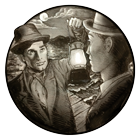

Goals
This machine is the reason that I'm taking this class. It is an 18th-century printing press that belonged to a Boston printer named Isaiah Thomas, and it now resides at the American Antiquarian Society (AAS) in Worcester, Massachusetts. During the Revolutionary War, Thomas realized that the flow of information was fundamental to the success of the cause. With the British closing in, Thomas moved this press 45 miles away, to Worcester, so that he could keep printing, and the rest of the colonies could keep getting the news of events in the Northeast.Last year, when I first started studying HTML and CSS on my own, I was in the middle of a month-long residency at the AAS. There to do archival historical research, I worked every day in their library -- and on a balcony above me was this press, the very one that Thomas had brought to safety. The press, juxtaposed with my evening study of HTML and CSS, made me think about web design and development in a much deeper way -- as the greatest, most powerful printing press ever made.
I'm a filmmaker and a writer and a journalist, and to me, the ability to use these tools as a means of expression is a thrilling opportunity. I want to achieve a thorough understanding of the possibilities, and to develop a more structured approach to what I've been learning. On a very specific level, I have a current project (an epic detective adveture called A Person Known to Me) that incorporates movies, prose, illustrations, photographs, audio and more -- and I want to find ways to create a fun, entertaining, easy-to-navigate experience for people who are interacting with the story.

Concerns
In this class, my primary concern is that I not get myself overly tangled up in complexity. In my solo experiments, my CSS has sometimes expanded into monstrous proportions, and navigating and managing all that has been a challenge. I think that simplicity is often the hardest thing of all...